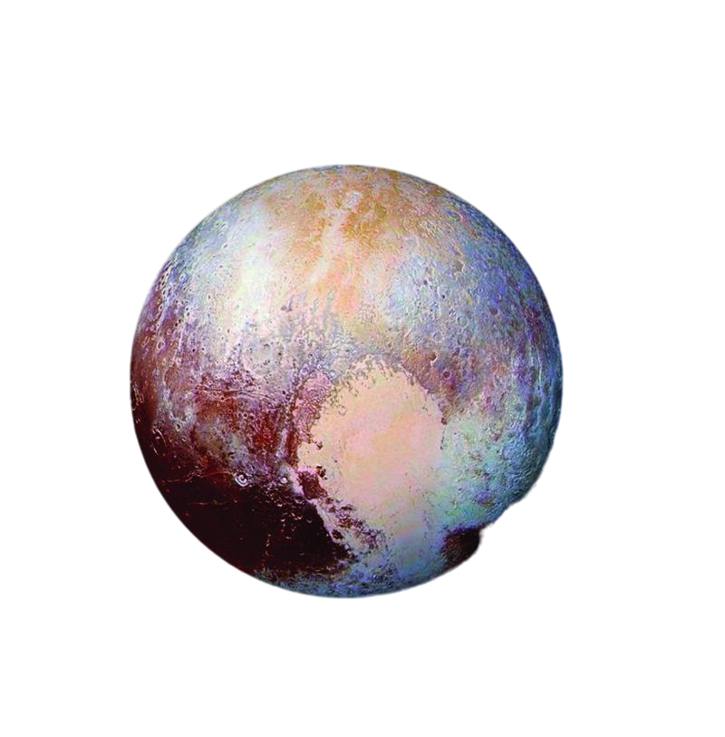

Pluto · Level 12 – Data Analytics & Dashboards
Why we analyze data, matplotlib, KPIs, dashboards and data sources.
Back to Galaxy 1. Goal of data analytics in business
Main goal: make decisions based on data, not just intuition.
- See trends in sales and costs.
- Find best-selling products.
- Understand customer behavior.
2. matplotlib for visualization
matplotlib is a Python library used to create charts and plots.
3. Example KPI for sales
A common KPI for sales is Monthly revenue.
- Other examples: number of orders, average order value.
4. Who uses dashboards?
Dashboards with daily sales, profit and orders are mainly used by:
- Decision makers and managers.
- Team leads and analysts.
They use dashboards to decide what to do next.
5. Data sources for dashboards
Dashboards usually take data from:
- Databases (sales, inventory, customers).
- CSV/Excel files with exported reports.
Images or audio are usually not used as main numeric data sources.
6. Automatic refresh
In business programming, dashboards can refresh data automatically:
- Every hour.
- Every night.
- In real time, depending on the system.
7. Data cleaning
Before building reports, data usually needs to be cleaned:
- Remove duplicates.
- Fix wrong dates or formats.
- Fill or handle missing values.
8. Good KPIs
Good KPIs should be:
- Simple and easy to understand.
- Directly connected to business goals.
- Measurable and trackable over time.
Level 12 – Recap
- Data analytics helps make decisions based on data.
matplotlibis used for charts in Python.- Monthly revenue is a common sales KPI.
- Dashboards are for decision makers and managers.
- Dashboards use data from databases and Excel/CSV.
- Data can refresh automatically (e.g. every hour).
- Data cleaning is essential before reporting.
- KPIs must be simple and tied to business goals.